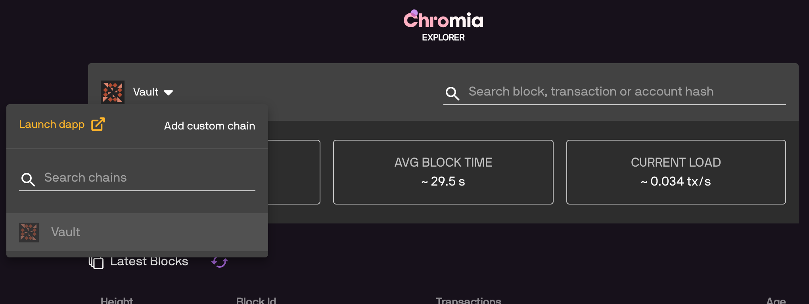
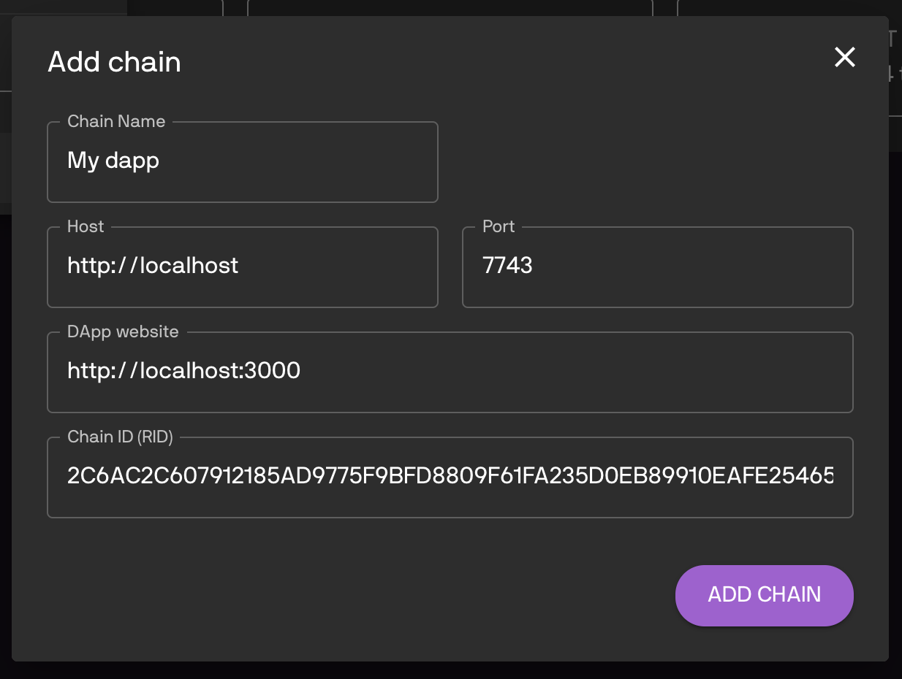
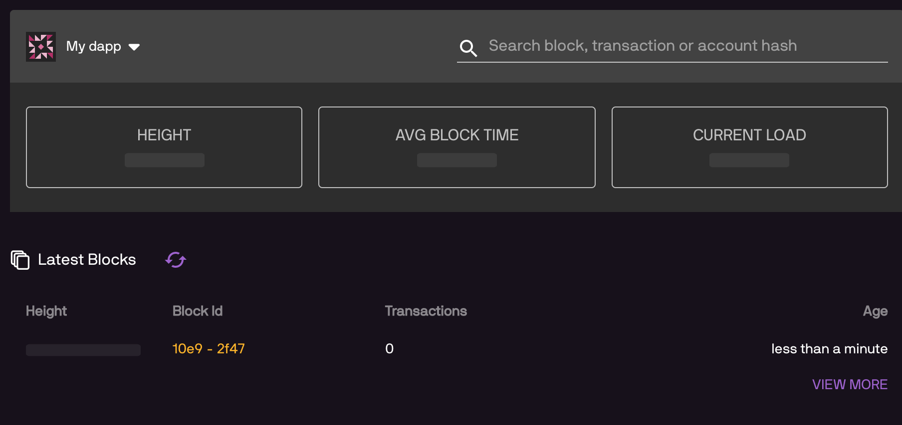

Project Setup¶
In this section, we explain how to setup a project to use FT3.
First let’s clone FT3’s bootstrap project repository:
git clone https://bitbucket.org/chromawallet/develop-chromia.git
Create a new directory for your project, and copy the postchain and rell directories over to your project. The remaining client contains an example for Single Sign-On feature, so we will come back to it later.
Blockchain side setup¶
Config dapp description¶
Go to
postchain/config/nodes/, you will find adevdirectory. This is our postchain config directory. You can rename it to whichever name matching your convention (e.g.prodordapp_name)Inside
devdirectory, open the fileblochains/app/config.template.xml, and change the settings for your chain:
<run wipe-db="true">
<nodes>
<config src="../../node-config.properties" add-signers="true" />
</nodes>
<chains>
<chain name="YOUR_CHAIN_NAME" iid="0">
<config height="0">
<app module="">
<args module="lib.ft3.core">
<arg key="my_blockchain_name"><string>YOUR_DAPP_NAME</string></arg>
<arg key="my_blockchain_website"><string>YOUR_DAPP_WEBSITE</string></arg>
<arg key="my_blockchain_description"><string>YOUR_DAPP_DESCRIPTION</string></arg>
<arg key="rate_limit_active"><int>1</int></arg>
<arg key="rate_limit_max_points"><int>10</int></arg>
<arg key="rate_limit_recovery_time"><int>30000</int></arg>
<arg key="rate_limit_points_at_account_creation"><int>1</int></arg>
</args>
</app>
</config>
</chain>
</chains>
</run>
my_blockchain_nameName of your chain.
my_blockchain_website“Main page” url of your dapp.
my_blockchain_descriptionDescription of your dapp.
The following arguments is settings for the rate limiter (spam prevention). The client will accumulate one “operation point” every rate_limit_recovery_time milliseconds, up to rate_limit_max_points. One point is spent for each operation.
rate_limit_active0 for not active (no spam prevention) or 1 to acticate the rate limit.
Note that even if rate limiter is not active, you must set some values in the following args.
rate_limit_max_pointsMaximum amount of operation points that is possible to accumulate (and therefore the maximum number of transactions that can be made at once)
rate_limit_recovery_time(In milliseconds) period of cool down before an account can receive one operation point.
rate_limit_points_at_account_creationHow many points an account have at the moment of creation (0 is min)
Note
Please note that if you use Single Sign-On, an account need to perform 1 operation immediately at the moment of creation to add disposable auth_descriptor (eg. SSO need rate_limit_points_at_account_creation at minimum of 1).
Refer to the SSO Section for more information.
Database setup¶
We have provided a docker image of the database for ease of use:
cd postchain
docker image pull chromaway/postgres:2.4.0-beta
docker-compose up
Note
If you don’t want to use Docker, or want to setup your own database, please follow the instructions in database-setup.
Update the postchain/config/nodes/dev/node-config.properties file to match your database settings.
Running the chain¶
(From root directory) start your chain:
./postchain/bin/run-node.sh dev
Replace dev with the name of your postchain config directory if you have renamed it.
If everything is properly configured, you will soon see a success message printed to the console:
Postchain node launching is done
Above that line you will find the generated blockchain ID of the blockchain that looks like this:
INFO 2120-01-01 23:59:59.999 [main] BaseConfigurationDataStore - Creating initial configuration for chain 1 with BC RID: B61EFF348B43D7C93F67F6D2ABE17391D709A77F9A040D6309984665082DFE8A
Note down the blockchain ID, we will use it to connect to the chain.
Important
Postchain will generate a blockchain ID for dapp based on the dapp’s codebase.
Whenever you change blockchain code of dapp, you will need to wipe database by adding the -W option, in order to get new blockchainID:
postchain/bin/run-node.sh dapp_name -W
If you missed the log in console, you can always check previous log in logs/logfile.log file.
Verify the chain is working¶
Go to the Chain Explorer. Click the dropdown next to “Vault”, then choose “add custom chain”:

In the following popup, enter your chain’s information, using information you entered in config.template.xml and the chain BRID:

If you see the chain’s information displayed, then your chain is working properly:

If chain explorer can’t connect to your chain, it indicates something is wrong with your settings from previous steps. Verify that the host and ports are correct (7743 is the default port from node-config.properties), and also your blockchainID.
With that the blockchain side is ready, we can go on to the client side.
Client side setup¶
The client directory you use in the bootstrap project is an example client, which will work with our current chain. In this section, we will discuss how to create our own client that connects to the chain.
Create a client directory for your project, run npm init (or bootstrap a project using a generator, e.g. create-react-app).
Add dependencies to the nodejs project:
npm i --save ft3-lib
npm i --save postchain-client
Add other libraries to your liking.
Set config variables¶
Choose your own method (e.g creating a config folder in your project and making a constants.js file in the config folder where you paste this into) to set these important config variables:
export const blockchainRID = "<YOUR CHAIN BRID>";
export const blockchainUrl = "http://localhost:7743/"; // This is default value in node-config.properties file
export const vaultUrl = "https://dev.vault.chromia-development.com"; // Vault's url for SSO
That concluded the project setup process. In next section, we will continue working with the client library and discuss the features of ft3-lib npm package.